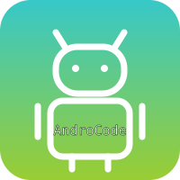

AndroCode
Создавай 2D-игры и приложения прямо на телефоне
Create project
Settings
Info
@androcode_official
Проекты
+ Новый проект
Сохранить
Удалить
Мой проект
изменён сегодня · 12 блоков
нажми на проект, чтобы открыть
AndroCode
← Назад
Scripts
редактор блоков
Sprites
спрайты и графика
Links
связи и события
Sounds
звуки
Monetization
запрос монетизации
Optimization
оптимизация проекта
← Назад
print to app:"Hello World"
print to app
in
out
text: "Hello World"
out
Save code
+
ТЕКСТ
+
==
(
)
−
1
2
3
4
5
6
7
8
9
*
0
.
/
^
..
←
ДА
ОК
Другое
Название проекта
Отмена
Создать
Выберите тип ресурса
Спрайты
Звук